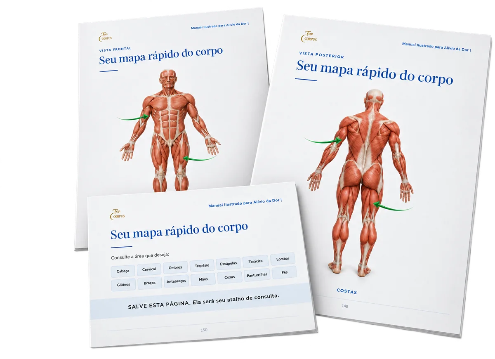
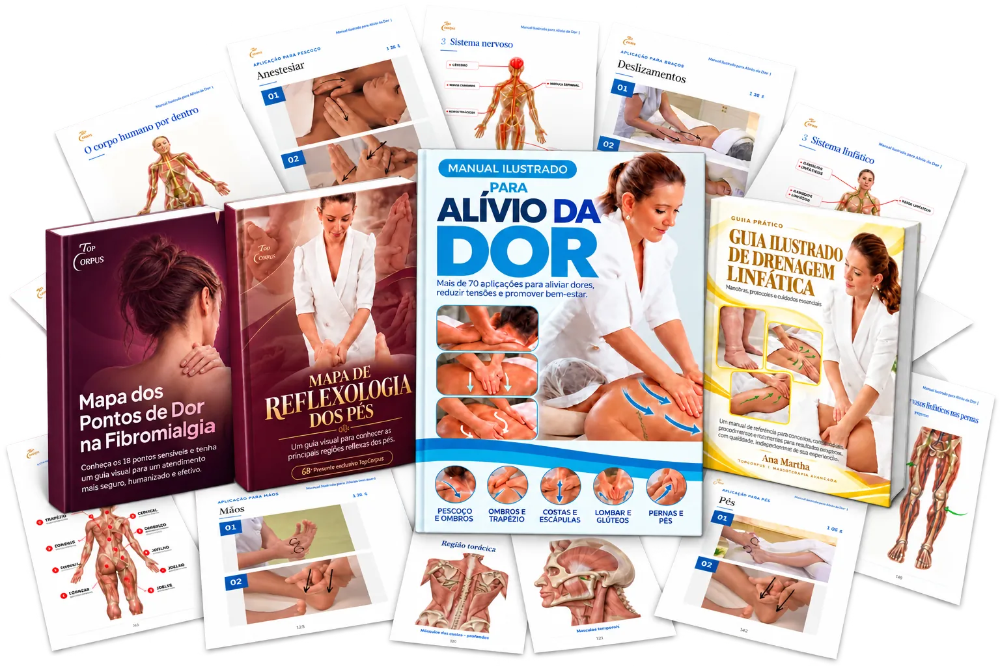
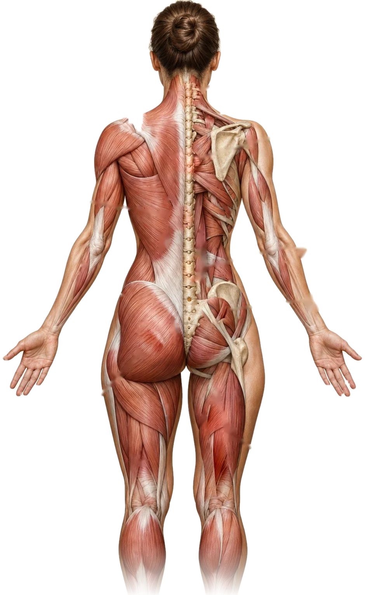
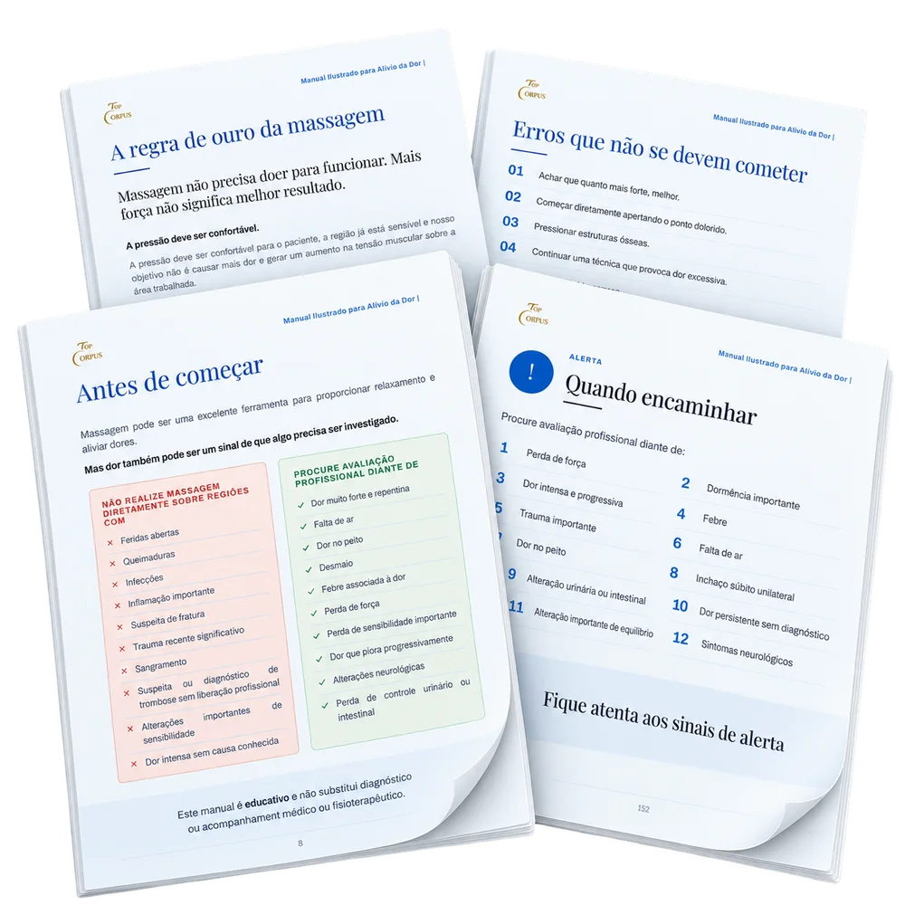
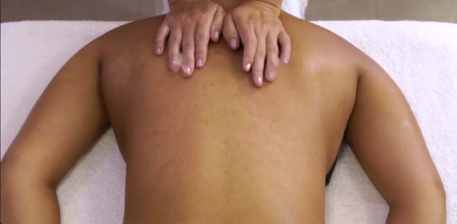
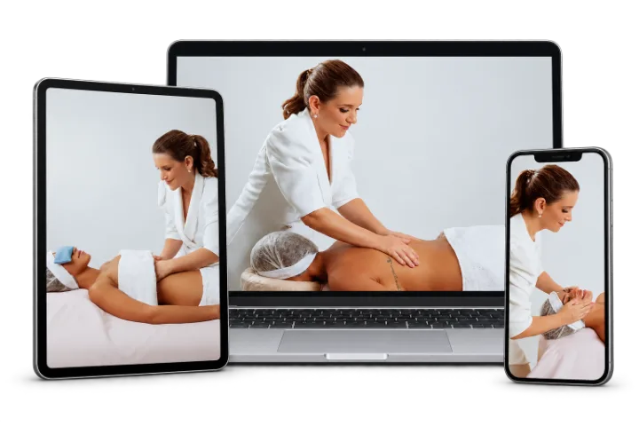
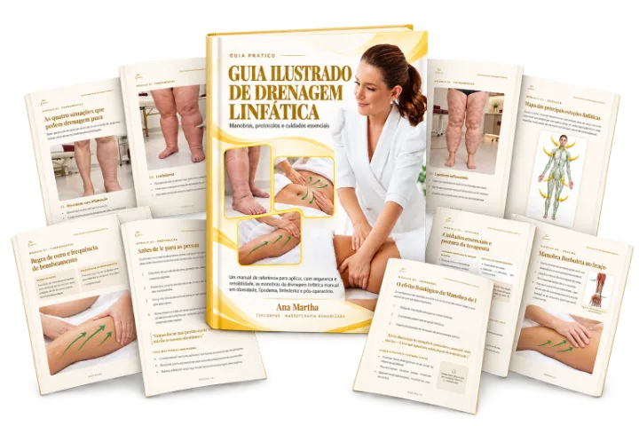
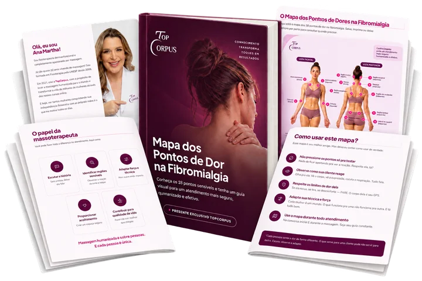
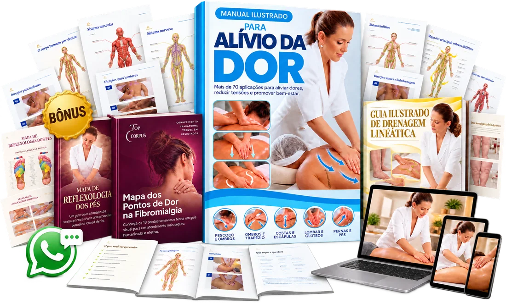
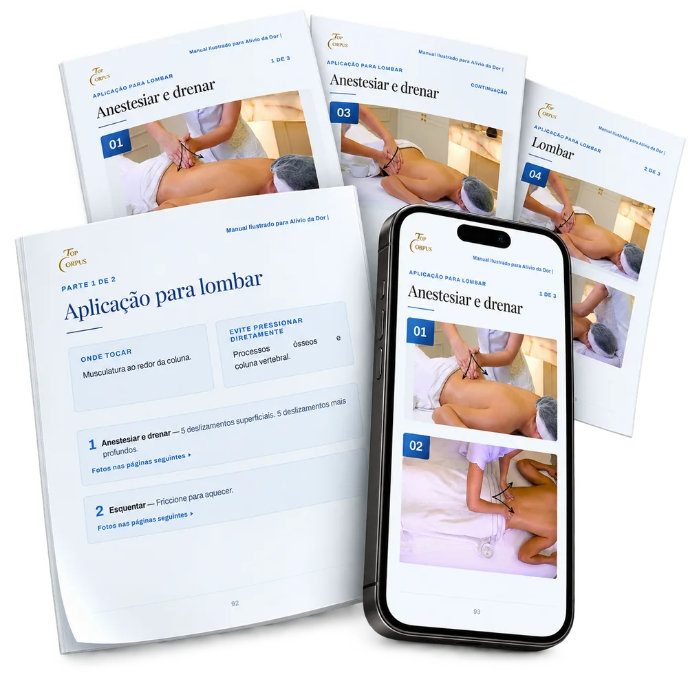

Encontre onde dói e vá direto para a página certa
O mapa do corpo te leva até a região, sem precisar procurar vídeo salvo no celular.
Alivie a dor com mais de 70 Massagens Ilustradas mostrando onde tocar, como tocar e qual pressão usar em cada região do corpo


Levanta da cadeira e já reclama. No fim do dia não aguenta mais de tanta dor.
A nuca endurece, a tensão sobe até as têmporas.
O estresse do dia acumula e os ombros ficam quase “colados” na orelha.
Aquela dor entre as escápulas, que não vai embora.
Choque, queimação e formigamento.
Um ponto sensível que endurece e espalha o desconforto.
Depois de horas em pé ou sentado, as pernas pesam e parecem inchadas.
Dura, com dor perto das têmporas.
De tanto digitar e segurar o celular.
Bônus com o mapa dos 18 pontos sensíveis.
Serve sim, e foi por isso que eu fiz do jeito que fiz.
O Manual mostra quando NÃO massagear e encaminhar para um profissional de saúde, como dor forte e repentina, febre junto com a dor, perda de força e inchaço súbito em uma perna.
Aqui você encontra onde tocar, qual pressão usar, por quanto tempo, e o que não é para mexer de jeito nenhum, para cada região.
Afinal, saber a hora de parar também faz parte da massagem.
Quero o meu Manual Ilustrado

Lombar travada, pescoço duro, perna pesada…
Para cada uma, o Manual mostra a foto do lugar, onde pôr a mão, quanto apertar e por quanto tempo.
Abriu na região que dói, já dá para começar:

O mapa do corpo te leva até a região, sem precisar procurar vídeo salvo no celular.
O Método Validado que eu uso há anos. Cada manobra segue a mesma sequência, do primeiro toque até o relaxamento final:
Sem termos técnicos: linguagem direta, com fotos em cada manobra.
O Manual trabalha numa escala de 1 a 10 e nunca passa de 6. A regra que eu ensino há anos: o corpo não precisa lutar contra as suas mãos.
Toma um remédio, deita e espera passar.
Mas suas mãos também podem ajudar.
A maioria das dores do dia a dia nasce de um músculo sobrecarregado, tenso, sensível e cansado. E um toque bem feito, no lugar certo, com a pressão certa e na direção certa, traz alívio de verdade.
A massagem não substitui o tratamento, nem a orientação do médico.
Ela é uma aliada, que somada aos cuidados que a pessoa já tem, traz mais alívio e de forma mais rápida.

Uma sessão de massagem nas costas, com o passo a passo completo de onde colocar as mãos, quanto de pressão usar em cada movimento e onde não encostar.
Você manda sua dúvida direto pelo WhatsApp e recebe resposta na hora. Seja sábado, domingo, feriado ou de madrugada.
A reflexologia é uma técnica milenar que trabalha pontos específicos dos pés para aliviar dores em outras partes do corpo. Aqui você recebe um mapa ilustrado desses pontos, para ampliar seu repertório.

Um guia visual com as principais regiões linfáticas, os caminhos e o sentido de cada movimento, para você aplicar a drenagem sem ficar adivinhando para que lado ela deve ir.

Conheça os 18 pontos sensíveis e tenha um guia visual para manobras mais seguras e humanizadas.
Meu pai, que sempre foi o meu herói, sofreu um grave acidente. Quebrou os ossos da perna, gemia de dor e, mesmo tomando vários remédios, não conseguia dormir direito.
Eu era só uma criança e queria muito aliviar a dor dele, mas eu não tinha técnica, nem conhecimento. Eu só tinha as minhas mãos, tão pequenas ainda.
Mesmo assim, comecei a fazer massagem na perna dele, com todo o meu amor.
Até que um dia ele me disse algo que eu nunca mais esqueci:
“Filha, hoje eu dormi sem dor porque você fez massagem em mim. Suas mãos são top.”
Ali eu tive certeza: queria usar as minhas mãos para aliviar dores.
Cresci, me formei em Fisioterapia e transformei isso em profissão.
Muito prazer, eu sou a Ana Martha, fisioterapeuta e fundadora do TopCorpus.
Sou casada, mãe de duas meninas, atuo há 20 anos aliviando dores com massagem humanizada.
Já ganhei prêmio internacional nos Estados Unidos, fui a vários programas de TV e criei o maior curso de massoterapia humanizada do Brasil, com mais de 60 mil alunas em 60 países.
E foi pensando naquela menina de 6 anos, que só tinha as mãos e muita vontade de ajudar, que eu coloquei nesse Manual o passo a passo para você aliviar a dor de quem precisa.
Você tem mais poder nas suas mãos do que imagina.
Quero aliviar doresMuitas das minhas alunas começaram do mesmo jeito: aliviando a dor de alguém de casa. Primeiro o marido, depois a mãe, depois a amiga que ficou sabendo.
E um dia perceberam que aquilo que faziam por amor tinha valor. Que tinha gente procurando exatamente isso.
Hoje muitas delas fizeram da massagem uma profissão, e algumas uma renda extra que cabe na rotina.
Não precisa ser o seu plano agora. O Manual começa pela pessoa que você ama. Mas é bom saber que essa porta existe, e que ela começa exatamente aqui.
Você tem mais poder nas suas mãos do que imagina.
Quero começar pelo Manual
Juntando tudo isso, o valor total seria: R$297,00
De R$297,00 por
R$27
você economiza R$ 270
Garanta o seu e receba agora mesmo por e-mail
Quero o Manual e todos os bônusJosiane Gomes Machado Ontem, 20:13
Eu tenho uma sala de atendimento na minha casa, já trabalhava como terapeuta integrativa e agora já estou tendo minhas primeiras clientes de Massoterapia e estou muito feliz com os resultados. Ontem atendi uma senhora com dores no corpo que quase não conseguiu sair sozinha do carro, veio com a filha, as duas fizeram massagem comigo e a senhorinha saiu andando muito melhor e entrou tranquilamente no carro. Hoje falei com ela pra saber como está e fiquei muito feliz com o resultado, disse que dormiu bem e que as dores diminuíram muito. Fiquei mega feliz. Sou de Canoas, RS.
Betina Chaluppe | Massoterapeuta
Boa tarde Ana Martha, tudo bem?
Mas meu relato de hoje é sobre o quão fantástico é podermos diminuir a dor de alguém, hoje agorinha de pouco, fiz um atendimento numa paciente com escoliose, chegou com dor 10, nas costas e nos braços. Ela optou por fazer a sessão inteira só nessas regiões e eu atendi, quando finalizei a sessão ela demorou mais 10 min pra sair da maca, pois estava dormindo, e quando levantou olhou pra mim e disse, nossa você tirou um peso gigante de mim. A dor está em 2.
Fiquei até sem reação por um instante, mas logo processei que tudo é fruto do meu esforço e do seu direcionamento. Obrigada
Esse atendimento mudou o meu dia, e me fez perceber mais ainda, que sou capaz de fazer a diferença.
Você pode imprimir ou usar direto pelo celular, sem instalar nada.
Abriu o mapa do corpo, encontrou a região que dói e a página já mostra onde tocar, como tocar e qual pressão usar.

Não. O Manual foi feito tanto para quem nunca fez massagem, quanto para quem já tem prática, com linguagem direta e sem termos técnicos complicados.
Não. O Manual foi feito para qualquer pessoa que queira aliviar a dor de alguém, seja numa maca ou no sofá de casa.
Pode. Muita gente imprime e usa ele aberto do lado da maca, justamente para consultar na hora do atendimento.
Não. Todas as manobras usam só as suas mãos.
O Manual é enviado para o seu e-mail assim que o pagamento for confirmado.
Essas situações pedem mais cuidado. O Manual traz os alertas de cada região e mostra quando é melhor não massagear e procurar um profissional de saúde. Ele não substitui avaliação médica ou fisioterapêutica.
Depende do caso. A massagem ajuda junto com o tratamento e nunca no lugar dele. Com o Manual, você fica sabendo como e quando pode fazer.
Cada região do Manual tem uma seção de alertas com os sinais de que a dor pode ser mais do que tensão. Se aparecer algum, o Manual orienta a parar e procurar um profissional de saúde. Ele também mostra quando NÃO massagear: inflamação, suspeita de fratura, sinais de trombose e outras situações.
Você tem 7 dias de garantia. Se achar que não é o que você precisa no momento, devolvemos todo o seu investimento.